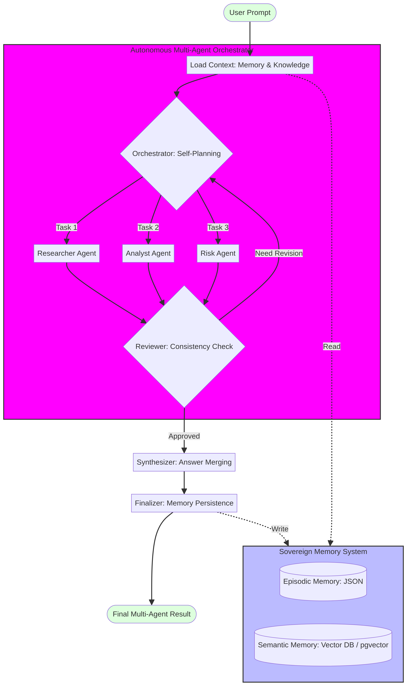

01
Plan
Break a broad goal into typed work items with dependencies, budgets, tools and exit criteria.
A reference control plane for orchestrated AI systems. Plan complex work, execute through bounded tools, inspect memory and keep human review as a first-class system boundary.
Evaluate a market expansion plan with evidence, risks and a reviewable recommendation.
Run a safe, deterministic simulation that makes the orchestration contract visible. No external action is executed and no user data is stored.
Choose a route, then inspect the trace and serialized state.
The result will appear here after the simulation completes. The state remains blocked from durable memory until approval.
{}The architecture separates the control surface, orchestration, specialists, tools and memory so every step has an owner and an observable output.

Architecture reference from Omni-Agent AI. The control plane makes the graph, tools and memory visible instead of hiding them behind one answer.
A reviewer should be able to understand progress from state, not hidden prompts. The contract keeps goal, evidence, trace, critique, approval and memory promotion explicit.
{
"mode": "auto",
"plan": [],
"evidence": [],
"tool_trace": [],
"approval_status": "pending",
"memory_write": "blocked"
}The project is intentionally opinionated about the things that make agent systems safer to operate and easier to explain.
Break a broad goal into typed work items with dependencies, budgets, tools and exit criteria.
Run bounded tasks through an allowlisted tool surface and return structured artifacts, not only prose.
Review contract compliance, evidence quality and risk before synthesizing a final result.
Keep external effects and durable memory behind explicit human review where the decision requires it.
The system is designed to make policy visible before a model becomes an operational dependency.
Every tool declares its input, output, permission scope and side-effect profile before it can participate in a run.
tool registryA failed critique returns targeted feedback and a bounded retry instead of restarting the entire system without context.
feedback loopSession work and episodic history stay distinct from durable semantic memory, which requires provenance and policy checks.
human boundaryEach capability maps to a question a technical reviewer, product leader or security partner will ask.
Research, analysis and risk roles can work in parallel, then converge through a synthesis and reflection step.
Carry the goal, plan, task outputs, tool traces, critique feedback and approval state through the run.
Tools are explicit, allowlisted and observable. External side effects require an approval boundary.
Separate session context, episodic history and durable semantic memory with clear provenance.
Inspect CSV structure and quality through local agents without treating uploaded file content as durable memory.
Retrieve precedents, evaluate new evidence and create a decision draft that stays pending human review.
A user can enter a task, choose Auto, Single or Multi-Agent mode, inspect agent status, read the unified result and review the tools and memory involved.
The source Omni-Agent project includes a live Command Center connected to its LangGraph engine, a Data Analysis Lab for CSV workflows and a Strategic Decision Twin for reviewable decision drafts.
Omni Agent Control Plane is a portfolio project by Majid Al-Sakani, created to show how product thinking, systems engineering and AI governance meet.